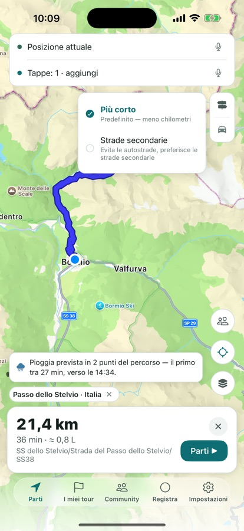
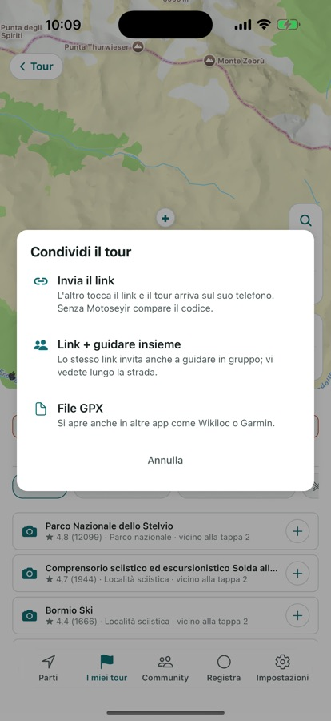
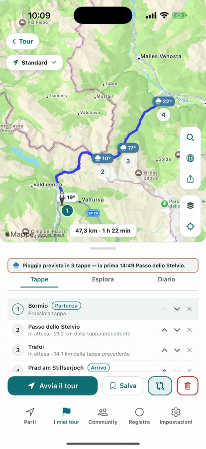
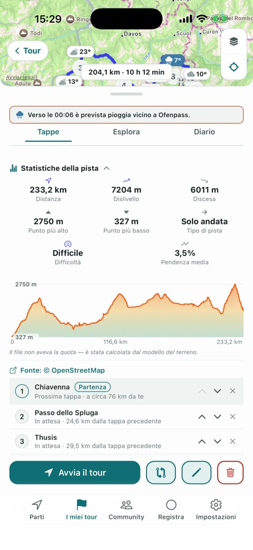
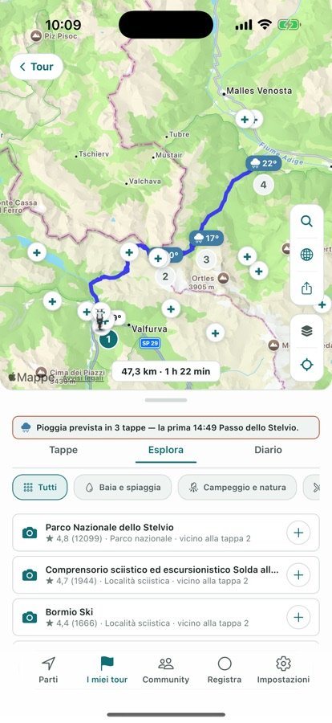

Motoseyir calcola il percorso sulla distanza, non sui minuti. Tra gli stessi due punti confronta più alternative e propone la più corta. In un tour con più tappe decide anche l’ordine delle tappe.
Nei primi 7 giorni dall’installazione tutto è aperto. Poi restano gratis 3 percorsi al giorno.
Perché è diversa
Gli altri navigatori trovano la strada più veloce. Motoseyir trova quella più corta.
Un percorso calcolato per l’auto in moto sbaglia sempre nello stesso modo: taglia i minuti e allunga i chilometri. Tu nel traffico passi, quindi quella differenza per te è reale: più benzina, più consumo di gomme. Motoseyir confronta le alternative e propone la più corta, anche se ci vogliono qualche minuto in più.
Funzioni
Un’app per tutto quello che fa un motociclista
Percorso, tour, giro e andare in gruppo — quattro capitoli, una sola app. Le schermate qui sotto vengono dall’app stessa.
Percorso
Percorso più corto
Tra gli stessi due punti l’app calcola più alternative e propone quella con la distanza minore — anche se ci vuole un po’ più di tempo. Nel piano gratuito hai 3 calcoli di percorso al giorno; con l’abbonamento il limite sparisce.
Modalità tour
Strade secondarie e modalità Costa
In modalità Strade secondarie il percorso arriva dal nostro server, che usa anche le stradine che una mappa normale salta. Da Ayder a Hemşin vengono così 24,1 km; le mappe generali per gli stessi due punti mostrano 49,9 km. La modalità Costa usa lo stesso server per tenere il percorso lungo il litorale.

Più tappe · Courier Pro
L’ordine migliore delle tappe
Inserisci i punti di consegna nell’ordine che vuoi e “Ordine migliore” li ridispone sulla distanza totale più breve. L’esempio qui sotto viene da un giro reale: le stesse quattro tappe, 57,1 km nel tuo ordine, 46,9 km nell’ordine trovato dall’app.
Il tuo ordine — 57,1 kmL’ordine di Motoseyir — 46,9 km
Percorsi leggendari
Percorsi leggendari, pronti da guidare
Passi alpini come lo Stelvio e il Sellaronda sono già pronti, insieme ai classici turchi come Şile–Ağva e la D400 licia e a sette americani, Tail of the Dragon e Big Sur compresi. Apri uno dalla lista ed entra direttamente nei tuoi tour, con le sue tappe e il suo tracciato.
Andare in gruppo
Giro in gruppo, invito alla corsa e interfono
Quando qualcuno crea un gruppo nasce un unico codice; tutti entrano con quel codice e si vedono sul percorso. In Il mio gruppo, “Invita alla corsa” accanto a un amico manda il tuo percorso e un collegamento vocale con un tocco; lui risponde con “Fai lo stesso percorso” o “Arrivo dietro di te”.
L’interfono parte anche senza percorso. Il volume di ogni amico si regola separatamente e i caschi Bluetooth si collegano direttamente. Non viene registrato niente: l’audio va solo a chi in quel momento è nella stanza, e la stanza si chiude a fine giro.

I miei tour
Diario del tour
A ogni tappa scatti una foto e lasci una nota breve, e restano entrambe sotto quella tappa. Le foto compaiono anche come schede sulla mappa del tour; toccale per aprirle a tutto schermo. Il diario resta sul telefono; se scegli di condividerlo nella Community partono al massimo tre foto.
Meteo
Avviso pioggia sul percorso
Se sul percorso è prevista pioggia, l’app avvisa in anticipo per l’ora in cui ci arriverai davvero. Se il tempo è asciutto, non compare nulla.

I miei giri
Registrazione del giro e piste
La registrazione continua anche a schermo spento e la traccia si colora in base alla velocità. Un giro finito lo puoi mandare al gruppo: traccia, distanza e tempo restano lì 14 giorni. Per una pista importata in GPX l’app calcola distanza, dislivello totale e pendenza massima; mentre scorri il dito sul profilo, il punto si muove sulla mappa.

Esplora
Esplora
L’app elenca calette, campeggi e posti per mangiare lungo il percorso. Guardi il voto e la distanza dal tuo tracciato e aggiungi come tappa quello che ti piace.

Inoltre nell’app
Costo del carburante
Vedi il costo stimato del carburante prima di partire. Il calcolo è in litri per 100 km, e negli Stati Uniti in miglia per gallone (mpg).
Guida vocale
Le indicazioni di svolta le dice la voce del telefono nella lingua dell’app; con l’app in turco arrivano invece da una voce umana registrata. La distanza segue la tua regione — negli Stati Uniti “tra 500 piedi svolta a destra”.
Feed della Community
I tour che condividi compaiono nel feed con il tuo nome utente e la tua icona, e si possono mettere mi piace e commentare. I post passano da un’approvazione prima di andare online. Circa 400 metri vicino alla partenza e all’arrivo vengono tagliati prima di ogni condivisione.
Uso in orizzontale
Ruota il telefono e mappa, schede e pulsanti passano a un nuovo layout: in navigazione la scheda della manovra e quella dell’arrivo a sinistra, la mappa a destra; I miei tour passa a due colonne.
Icone del motociclista
L’icona sulla mappa la scegli dalla griglia nelle impostazioni: moto, chopper, maxi scooter, touring, freccia o casco. Nelle tre aggiunte con l’ultimo aggiornamento si vede anche il pilota.
Presto: AI CoRider — un compagno di viaggio con cui parli dentro il casco. Non è ancora nella versione dell’App Store; arriverà in Pro con un aggiornamento successivo.
Non serve nessun account. Dopo l’installazione tutto è aperto per 7 giorni; poi il piano gratuito continua con 3 percorsi al giorno e 1 tour salvato.
Gratis
Dall’installazione, senza scadenza.
3 calcoli di percorso al giorno
1 tour salvato
Navigazione passo passo con guida vocale
Avviso pioggia sul percorso
Entrare in un gruppo con invito o codice
Motoseyir Pro
I prezzi attuali cambiano da regione a regione; li vedi nella schermata dell’abbonamento sull’App Store.
Percorsi illimitati
Ordine migliore con più tappe
Tour e piste illimitati
Modalità Strade secondarie, Costa ed Enduro
Suggerimenti Esplora lungo il percorso
Creazione di gruppi e interfono
I tuoi dati
Nessun account, nessun dato inutile
Per usare Motoseyir non devi dare nome, e-mail o numero di telefono. Qui sotto un riassunto dell’informativa privacy; il testo completo è in italiano nell’app, in Impostazioni → Informativa privacy.
Non devi creare un account — non chiediamo nome, e-mail, telefono né data di nascita.
Per calcolare il percorso, la tua posizione e le tue ricerche vanno soltanto ai servizi di mappe; nessuno le conserva.
I tuoi tour, le registrazioni dei giri, le note del diario e le foto restano solo sul tuo dispositivo — a meno che non li condivida nella Community.
Per evitare abusi della prova e delle campagne, al nostro server arriva un’impronta anonima e irreversibile del tuo dispositivo; quell’impronta non ti identifica.
Se attivi il giro in gruppo, la tua ultima posizione è condivisa solo durante il giro e viene cancellata alla fine. L’audio dell’interfono non viene registrato, passa solo a chi in quel momento è nella stanza.
Nessuna pubblicità; nessun dato viene condiviso con reti pubblicitarie.
Ogni aggiornamento importante è qui, il più recente in alto.
1.1.0Settembre 2026
Uso in orizzontale: ruota il telefono e mappa, schede e pulsanti passano a un nuovo layout. In navigazione la scheda della manovra e quella dell’arrivo sono a sinistra, la mappa a destra; I miei tour mostra due colonne.
Interfono di gruppo: in Il mio gruppo, “Invita alla corsa” accanto a una persona manda percorso e collegamento vocale con un tocco. L’interfono parte anche senza percorso, il volume di ogni amico si regola separatamente e i caschi Bluetooth ora si collegano direttamente.
Registrazione del giro al gruppo: manda al gruppo un giro finito. Traccia, distanza e tempo restano nel gruppo 14 giorni; la zona attorno a partenza e arrivo resta nascosta.
Tre nuove icone del motociclista — chopper, maxi scooter, touring — e una nuova pagina di aiuto nell’app: Impostazioni → Come si fa?
I post della Community passano da un’approvazione prima di andare online; sulla scheda puoi ingrandire la mappa e le foto del diario compaiono come schede sulla mappa.
Annunci di svolta registrati di nuovo, più naturali. Il codice MOTOSEYIR7 nelle impostazioni sblocca cinque giorni di Pro, una volta sola su questo dispositivo.
1.0.7Settembre 2026
Entrare in un gruppo con invito o codice ora è gratis; crearne uno resta in Pro. Il link dell’invito apre direttamente l’app.
Il diario del tour ora scatta con la propria fotocamera, e la foto di copertina la mandi direttamente nella tua storia Instagram.
L’unità di misura arriva da dove ti trovi: miglia, mph e piedi negli Stati Uniti, miglia e yard nel Regno Unito, chilometri in tutto il resto — e la guida vocale parla nella stessa unità.
Aggiunti sette percorsi leggendari americani: Tail of the Dragon, Cherohala Skyway, Blue Ridge Parkway, Beartooth Highway, Angeles Crest, Big Sur, Million Dollar Highway.
Contatti
Qualcosa non va, o hai un’idea?
Assistenza nell’app
Scrivici direttamente da Impostazioni → “Qualcosa non va, o hai un’idea?”; le risposte tornano nello stesso posto.
Instagram
Seguici per nuovi percorsi, foto dei giri e annunci.